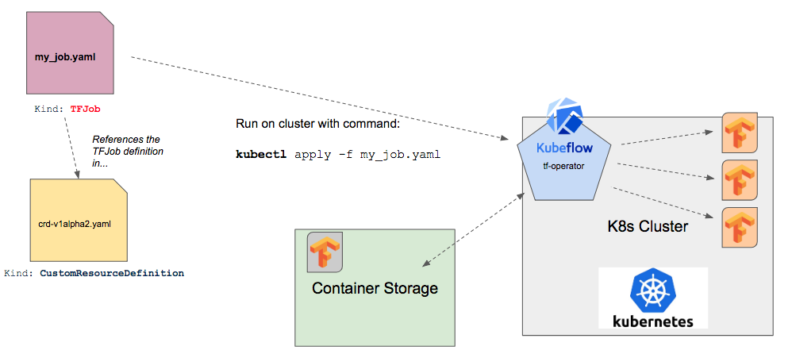
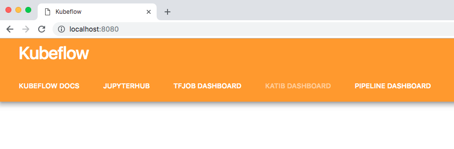

Running Distributed TensorFlow Jobs on Kubeflow 3.5
This tutorial is on how to run a distributed TensorFlow job on Kubeflow 3.5. In a previous tutorial, we showed how to setup Kubeflow 3.5 on Google Cloud. For a review on why Kubeflow is compelling in the current machine learning infrastructure landscape, check out our report and our 2019 Trends interview notes on artificial intelligence and machine learning.
A trend we see with our customers is where they want to manage workloads that can easily move between an on-premise infrastructure and a similar cloud managed infrastructure. Kubernetes is quickly becoming the platform for doing just this. While TensorFlow already has a distributed execution mode available, some teams want to manage their systems with kubernetes for the aforementioned reasons. From that perspective we saw it relevant to put together this tutorial.
Concepts in this tutorial:
In this article we'll get a better understanding of:
- Overall architecture of distributed TensorFlow job execution on Kubeflow 3.5
- Working with .yaml files for Kubernetes custom resource definitions
- How to setup a custom TensorFlow job on Kubeflow
- Managing containers and container registries
- Working with kubectl to operate the remote Kubernetes cluster
Overview of TensorFlow on Kubeflow
The high-level set of tasks needed to run a TensorFlow job on Kubeflow are listed below.
- Write/configure (or re-use) python TensorFlow training code
- Build a .yaml file based on the custom resource definition "TFJob" describing our job (container image, program or script for training, execution parameters, etc)
- Find an existing container or build a docker container image containing our code and dependencies
- Send the job yaml file to the cluster for execution with kubectl
Out of the box, Kubernetes does not understand how distributed TensorFlow works. Kubernetes needs help understanding where the daemons are running and how they talk with one another. We can see the general flow of how the different parts of Kubeflow work together to get TensorFlow containers working on Kubernetes and coordinating between worker containers.
In the sections below we'll explain the individual parts from the diagram above, focusing on TFJob, the custom component that manages distributed TensorFlow excecution on Kubeflow.
What is TFJob?
Sidebar: Kubernetes and Custom Resources
A kubernetes resource is an endpoint in the Kubernetes API that stores a group of API Objects of a certain kind. A custom resource is a Kubernetes API extension that is specific to a cluster once installed, customizing said cluster. Custom resources can be created, updated, and deleted on a running cluster through dynamic registration. Once we have installed a custom resource, we can control it with the kubectl tool just like we would built-in resources (e.g., "pods", etc).
By themselves custom resources allow us to store and retrieve structured data. When we combine a custom resource with a controller then they become a true declarative API. The controller interprets the structured data as a record of the user’s desired state. The controller continually takes action to get to this state. Custom controllers are especially effective when combined with custom resources (but they can work with any kind of resource). One example of this combintion (custom controller and custom resource) is the "operator pattern". The operator pattern allows us to encode domain knowledge for specific applications into an extension of the Kubernetes API, bringing us to how
TFJob is a custom component for Kubeflow which contains a Kubernetes custom resource descriptor (CRD) and an associated controller ( tf-operator, which we'll discuss further below). The TFJob CRD (a resource with a simple YAML representation) makes it easy to run distributed or non-distributed TensorFlow jobs on Kubernetes.
The TFJob CRD informs the cluster how to manage kubernetes resource during job training. When we write a new TensorFlow training job for Kubeflow we write a custom .yaml file that references the TFJob CRD, which is a resource with a simple YAML representation.
TensorFlow supports distributed training and can contain 0 or more of the following process types:
- Chief: responsible for orchestrating training along with other tasks such as checkingpointing the model
- Ps: Parameter server, provides a distributed data store for the global model parameter vector
- Worker: Works update a local copy of the model parameter vector by training on the input dataset. Sometimes worker 0 may also serve as the Chief
- Evaluator: tracks model statistics during training
With our custom job YAML file we'll setup how these processes execute for our specific job. Let's now take a look at a how to setup a TensorFlow job YAML file.
An Example Custom TensorFlow Job Configuration in YAML
In this case we'll take a look at how to get the canonical MNIST job running as a Kubeflow job.
In the short example below we can see how the kind field is referenced as "TFJob" and the job roles are configured in the replicaSpecs section:
Understanding the Configuration Options
There are two versions of the TFJob API:
For the purposes of this example we'll forcus onv1alpha2 because we're running on a deployed Kubeflow 3.5 cluster in this article.
Key entries in the top of the yaml file (and their role) to note:
apiVersion: "kubeflow.org/v1alpha2"
kind: "TFJob"
metadata:
name: "dist-mnist-pct"apiVersion field references the version of our API (v1alpha2).
The kind field references the CRD we want to use, "TFJob".
The metadata field allows us to set labels and give the job a specific name, along with assigning it to a namespace. The metadata subfields helps uniquely identify the object, including a name string, UID, and optional namespace.
In this example we name our job "dist-mnist-pct".
Defining Processes with tfReplicaSpecs
Next we have the tfReplicaSpecs section, as seen below:
spec:
tfReplicaSpecs:
PS:
replicas: 1
restartPolicy: Never
template:
spec:
containers:
- name: tensorflow
image: emsixteeen/tf-dist-mnist-test:1.0tfReplicaSpec section defines the processes (distributed) TensorFlow uses:
- Master
- Workers
- Ps
PS (parameter server).
A TFJob resource is a collection of TfReplicas.
Each TfReplica matches up to a set of TensorFlow processes executing a role in the TensorFlow training job (example: a TensorFlow worker process, or a TensorFlow parameter server process).
The TFJob (v1alpha2) spec has a map that matches the type of replica (the list of processes above) with the TFReplicaSpec for that replica. Each TFReplicaSpec entry has the following 3 sub-fields:
- replicas: replica count of this process type to create for the TFJob instance
- template: PodTemplateSpec describing the pod we want to create for each replica (the pod must have a container named 'tensorflow')
- restartPolicy: the policy for if/how the pod will be restarted when they exit
Worker definition.
Defining TensorFlow Worker Processes for Kubeflow
We can see the worker processes defined in the YAML configuration snippet below:
Worker:
replicas: 2
restartPolicy: Never
template:
spec:
containers:
- name: tensorflow
image: emsixteeen/tf-dist-mnist-test:1.0replicas: 2 configuration line, as we wrote about above in the previous section. We also set the restartPolicy here to "Never".
We can see in the template section, we are defining a PodTemplateSpec for the pod we want to create for the worker replicas.
Inside the template, we define a spec (PodSpec) field, which describes the specification of the desired behavior of the pod.
Inside the spec field, we further define a containers field.
This field defines a list of containers we want to assign to the pod. There must be at least 1 container assigned to the pod, and we cannot update this field later. In the configuration example above, we can see the following container fields defined:
- name: [ where does this come from? ]
- image: docker image name (for expanding information on docker images, check out this resource)
containers field are:
- args
- command
- env
- ports
- volumeMounts
- workingDir
We now have a good idea of what our custom TensorFlow job needs to look like and we're ready to run our job. First we need to make sure we have a Kubeflow 3.5 cluster ready and installed with the right TFJob CRD to support out job.
To deploy the TFJob custom resource to our kubernetes cluster we need to deploy kubeflow to our cluster. This way, when we send our custom TensorFlow job to the cluster, the custom operator tf-operator is already installed there. Something to note as well is that each TensorFlow job running on Kubeflow is treated as a component in our Kubeflow application.
Running the TensorFlow Job on Kubeflow with Kubectl
A Tensorflow job on Kubeflow is made up of:
- TensorFlow python code to execute for model training
- Custom job .yaml file
- Docker container to execute the code on inside the cluster (example)
- Git clone a repository containing the job yaml file already setup for the reader
- Run the job on the cluster with kubectl
First we'll get a copy of the job yaml file from github:
git clone https://github.com/pattersonconsulting/tf_mnist_kubeflow_3_5.gitChange into the project subdirectory (cd command) and then run the following kubectl command:
Kubectl apply -f tf_mnist_job.yamlWe should now have the job running on the Kubeflow cluster. We won't see the job running and writing to our console screen because it is running on a remote cluster. We can check the job status with the command:
kubectl get podOur console output should look something like:
Successful Job Completion
To check the progress of our job, we want to check the logs of the local TensorFlow process on the cluster. We do that with the following command:
kubectl logs dist-mnist-pct-worker-0The logs will look something like the output sample below:
Checking a Process Logs on Failure
Sometimes we'll notice a job that seems hung or gives an error message in Kubernetes. We can check the logs to see what is going on inside the container with the same command:
kubectl logs dist-mnist-pct-worker-0The logs will look something like the output sample below:
Delete a Job
Periodically we will mis-configure a job or have a missing container in a repo. The job will fail and we need to clear it out of kubeflow. To do this we need to delete the job which we can do with the following command:
kubectl delete -f [file.yaml]The result of this command will look similar to the console output below:
Accessing the TJob User Interface
To get to the TensorFlow dashboard included with Kubeflow 3.5 we need to setup ports correctly with the command:
kubectl port-forward svc/ambassador 8080:80Now we go to our web browser and load the url: http://localhost:8080/ and we should see something like the image below:
Optional: Building Custom TensorFlow Docker Containers
This tutorial has dealt with running a pre-made TensorFlow job running in pre-built containers. Eventually the reader will want to customize their own job and that will likely involve updating the container image so in this section we give the reader some basics on how to do that.
To launch a container we run an image. An image includes everything needed to run an application (code, runtime, libraries, etc) as an executable image. In our TensorFlow job's cases, it includes things like the TensorFlow library dependencies and our python training code to run on each container.
Docker hub provides a repository for container images to be stored, searched, and retrieved. Other repositories include Google's Container Registry and on-premise Artifactory installs.
In the code snippet below we can see the docker file used to build this tutorial's example container image.
(Assuming the reader has a docker hub account), we can build the docker file and tag it into our docker hub repository with the command:
docker build -f Dockerfile -t [namespace/tag:version] ./
Summary
In this article we walked the reader through an explanation of how TensorFlow jobs work on Kubeflow. We also showed the reader how to run their own custom TensorFlow jobs on Kubeflow and looked at the various ways to customize a job. In future articles we'll look at how to leverage different data storage / loading patterns and how to launch jobs from JupyterHub notebooks on Kubeflow.
For more perspective on the space, check out our report and our 2019 Trends interview notes on artificial intelligence and machine learning. If working with machine learning workflows on Kubeflow is interesting to your organization, reach and and continue the conversation with us.